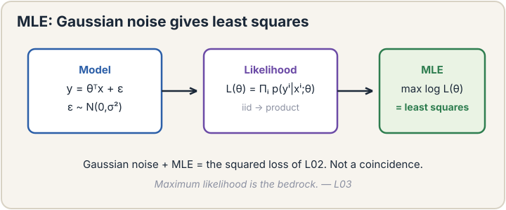
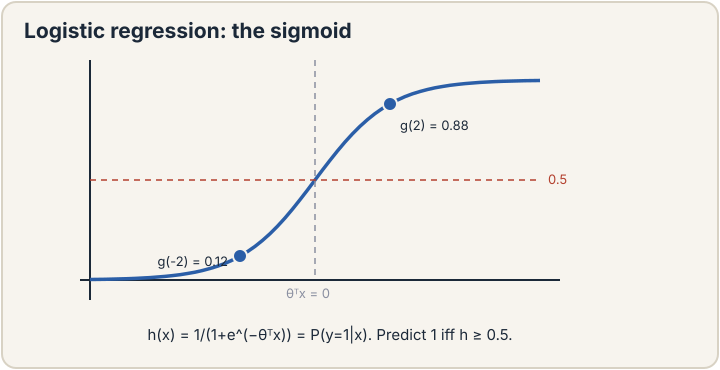
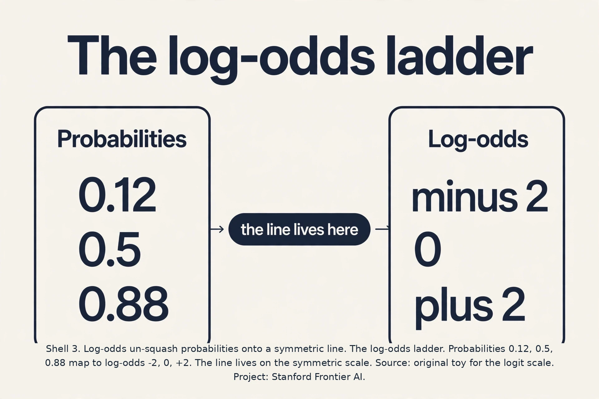
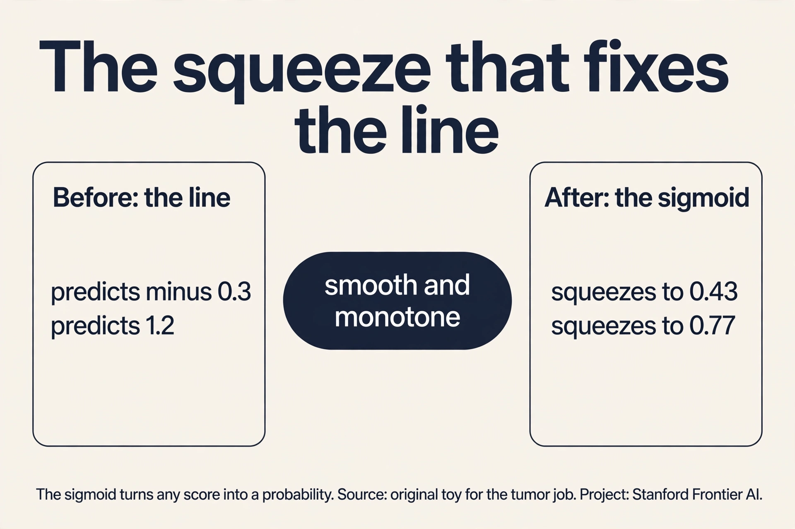
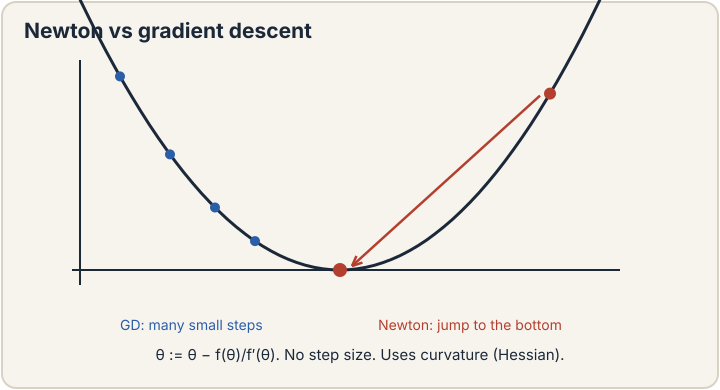
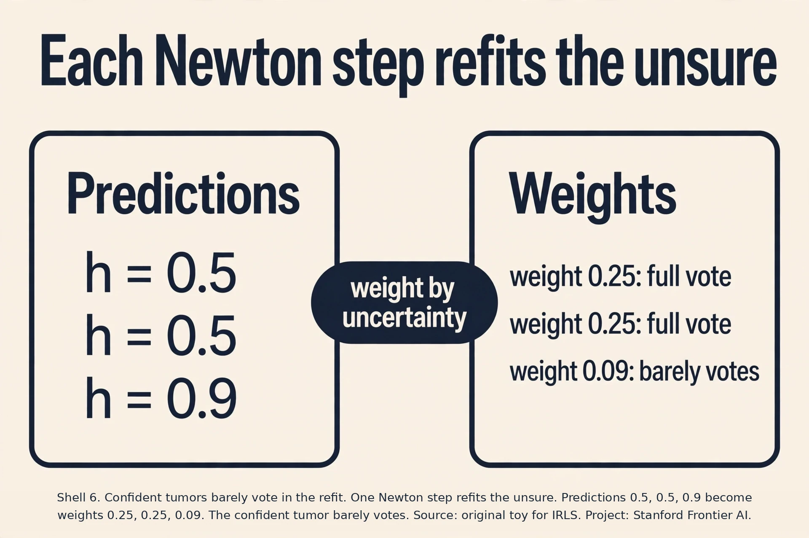
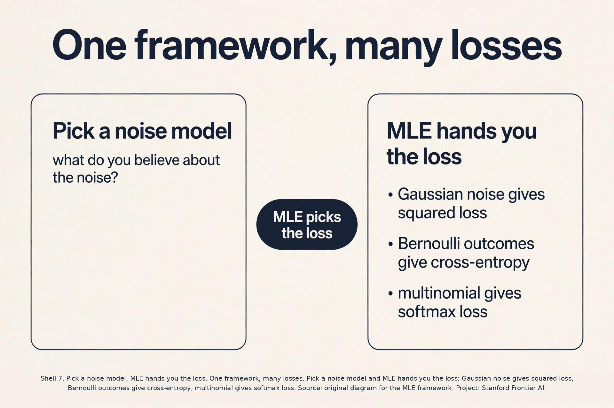

Lecture 3: Maximum Likelihood and Logistic Regression
Video blocked (ad-blocker or local file mode).
Watch on YouTubeVideo not loading? Watch on YouTube
Original lecture. Chris Ré builds the MLE framework, derives logistic regression, and shows Newton's method is iteratively reweighted least squares.
The job: benign or malignant
A doctor measures a tumor’s size: 2.1 centimeters. The question is not a number. It is a category: benign or malignant. The answer wanted is a probability: “there is a 78 percent chance this tumor is malignant.” This job is classification: predict which of two classes an input belongs to. The target y is 0 or 1, not a price.
Lecture 2 fit a line to numbers. A line cannot answer this job. It predicts 0.78 for one tumor and 1.4 for the next. A probability of 1.4 is nonsense. Something has to squeeze the line’s output into the range 0 to 1, and something has to say why that squeeze is the right one. This chapter builds both, and underneath them a framework that explains where the squared loss of lecture 2 came from.
First attempt: fit a line, draw a threshold
The naive idea: treat the labels as numbers, fit the least-squares line from lecture 2, and call everything above 0.5 malignant. Watch it on a toy. Five tumors, one feature (size in cm), labels 0 for benign and 1 for malignant.
tumor: size 1.0 -> 0 size 1.5 -> 0 size 2.0 -> 1
size 2.5 -> 1 size 4.5 -> 1 (one huge benign-looking outlier)
Fit a line through these as if the labels were prices. The outlier at 4.5 drags the line’s right end down hard: least squares punishes big misses quadratically, so one far point bends the whole line. The fitted line crosses 0.5 at size 2.9 instead of 1.75. A tumor of size 2.5, clearly malignant in the data, now scores 0.42 and gets called benign. One outlier flipped a diagnosis.
Two deeper failures. First, the line’s outputs are not probabilities: it predicts -0.3 for small tumors and 1.2 for big ones. Thresholding at 0.5 is a hack with no meaning. Second, the squared loss treats a miss from 0.9 to 1.0 the same as a miss from 0.4 to 0.5, but for probabilities those misses mean very different things. The line is the wrong shape for the job.
The key question
What if we stop fitting values and start asking a probability question? For each knob setting, ask: under this model, how likely was the data we actually saw? Then pick the knobs that make the observed data most likely. That question is maximum likelihood estimation, MLE, and it is the bedrock framework of this course.
Maximum likelihood, on a coin
Before tumors, a coin. You flip it 10 times: 7 heads, 3 tails. The model is one knob: phi, the probability of heads. The likelihood of the data under the model is the probability the model assigns to exactly what you saw:
L(phi) = phi^7 * (1 - phi)^3
Try phi = 0.5: L = 0.5^10 = 0.00098. Try phi = 0.7: L = 0.7^7 * 0.3^3 = 0.00222. The data is more than twice as likely under phi = 0.7. The MLE answer is phi = 0.7, the observed fraction. No surprise, but the machinery generalizes: write the probability of the data as a function of the knobs, maximize it.
In practice we maximize the log likelihood, because products become sums under a logarithm and the maximum sits in the same place:
l(phi) = 7 * log(phi) + 3 * log(1 - phi)
Set the derivative to zero: 7/phi - 3/(1-phi) = 0, so phi = 0.7. Same answer, cleaner arithmetic.

Subchapter: the log, three reasons with numbers
Why maximize the log likelihood instead of the likelihood? Three reasons, each with a number.
First, products of tiny probabilities underflow. Ten thousand examples at probability 0.5 each give a likelihood of 0.5^10000, which floating point rounds to exactly 0. The log turns the product into a sum: 10000 * log(0.5) = -6931, a perfectly normal number.
Second, derivatives of sums are easy. The derivative of a sum is the sum of the derivatives. The derivative of a 10,000-factor product needs the product rule 10,000 times.
Third, the log is monotone: it never changes the location of the peak. The knobs that maximize L also maximize log L. For the models in this course the log likelihood is also concave, which means one peak and no local traps. Logistic regression has a unique best answer because of this concavity.
Least squares was MLE all along
Here is the payoff. Assume each house price equals the line’s prediction plus Gaussian noise: y = theta^T x + epsilon, where epsilon is a bell-curved random error with mean 0 and variance sigma^2. The bell curve (Gaussian) says small errors are likely and big errors are exponentially unlikely. The probability density of seeing target y given input x is:
p(y | x; theta) = (1 / sqrt(2*pi)sigma) * exp(-(y - theta^T x)^2 / (2 sigma^2))
The log likelihood over m independent houses is a sum of logs. The constants do not depend on theta, so maximizing the log likelihood means minimizing sum (y - theta^T x)^2. That is exactly the least squares loss J(theta) from lecture 2.
This reframes everything. Least squares is not an arbitrary choice. It is the MLE answer under the assumption that errors are Gaussian. Change the noise assumption and you get a different loss. The loss chip now has a probabilistic meaning: minimizing J is maximizing the probability of the data under Gaussian noise.
Logistic regression: the sigmoid
Back to tumors. Model each label as a Bernoulli coin flip: y = 1 with probability h, y = 0 with probability 1 - h, where h depends on the tumor. We need a function that turns the line’s score z = theta^T x (any real number) into a probability (between 0 and 1). It should be smooth and monotone: a bigger score means a bigger probability, always. The classic choice is the sigmoid, also called the logistic function:
g(z) = 1 / (1 + e^(-z))
Compute it by hand. At z = 0: g = 1/(1+1) = 0.5. At z = 2: g = 1/(1 + e^-2) = 1/1.135 = 0.88. At z = -2: g = 1/(1 + e^2) = 1/8.39 = 0.12. At z = 10: g = 0.99995. The curve starts near 0, rises through 0.5 at z = 0, and flattens near 1. A threshold would jump from 0 to 1 at a point and is not differentiable. The sigmoid is smooth everywhere, so gradients flow.

Logistic regression is the model h_theta(x) = g(theta^T x), despite the name it is classification, not regression. Fit it by MLE: the likelihood of the tumor labels is the product over patients of h^y * (1-h)^(1-y). Take the log, maximize. There is no closed form like the normal equations, so we need an iterative optimizer. Gradient descent works. The gradient has the familiar shape: sum over examples of (h - y) * x. Error times feature again, this time with the error measured in probability space.
The update for one example looks like lecture 2’s, with the sigmoid inside:
theta_j := theta_j - alpha * (g(theta^T x^(i)) - y^(i)) * x_j^(i)
Subchapter: odds and log-odds, the natural scale
Probabilities live on 0 to 1, an asymmetric scale. Moving from 0.5 to 0.6 is not the same evidence as moving from 0.89 to 0.99, but both are 0.1 on the probability ruler. Odds fix this: odds = p/(1-p). At p = 0.5, odds are 1 (even money). At p = 0.88, odds are 7.33. At p = 0.12, odds are 0.136.
Log-odds take the log: log(1) = 0, log(7.33) = 2, log(0.136) = -2. Now the scale is symmetric: +2 and -2 are mirror images. Logistic regression fits its line to the log-odds. The score z = theta^T x IS the log-odds, and the sigmoid maps back to probabilities because it is exactly the inverse: p = 1/(1+e^-z) undoes z = log(p/(1-p)).

Subchapter: the gradient, worked
One gradient-descent step on the tumor toy. Two tumors: size 1.5 benign (y = 0), size 2.5 malignant (y = 1). Start theta = (0, 0), so z = 0 and h = 0.5 for both. Errors: 0.5 - 0 = 0.5, 0.5 - 1 = -0.5.
Gradient for the intercept (x_0 = 1): 0.5 + (-0.5) = 0. Gradient for the size knob: 0.5 * 1.5 + (-0.5) * 2.5 = 0.75 - 1.25 = -0.5. Update with alpha = 1: the intercept stays 0, the size knob becomes 0.5.
New scores: z = 0.75 for the small tumor (p = 0.68), z = 1.25 for the big one (p = 0.78). The big tumor moved the right way. The small one moved the wrong way. The intercept will fix the small one next step. This tug-of-war is what every gradient step computes.

Newton’s method: use the curvature
Gradient descent uses only the slope. Newton’s method also uses the curvature (the second derivative, how fast the slope is changing). The idea: approximate the loss by a parabola at the current point, then jump straight to the parabola’s bottom. In one dimension:
theta := theta - J'(theta) / J''(theta)
No alpha to tune. The curvature sets the step size automatically: flat curvature means a cautious step, sharp curvature means the bottom is near. For logistic regression the method converges in a handful of steps, each one vastly more effective than a gradient step. The lecture notes it “annihilates” gradient descent measured in steps.
The update has a beautiful form. Each Newton step on logistic regression is exactly a weighted least squares problem: fit a line, but weight each example by h(1-h), its uncertainty. Confident predictions (h near 0 or 1) get tiny weight. Uncertain ones (h near 0.5) get full weight. The algorithm is iteratively reweighted least squares (IRLS): solve a weighted line fit, update the weights from the new predictions, repeat. The weights focus each round on the examples the model is currently unsure about.

Subchapter: IRLS by hand, one round
One Newton step on three tumors. Current predictions: h = 0.5, 0.5, 0.9 for labels y = 0, 1, 1. Weights are h(1-h): 0.25, 0.25, 0.09.
The third tumor is already confident, so it gets 0.09, barely a vote. The two uncertain ones get 0.25 each, full votes. The weighted least-squares fit bends toward the uncertain pair and nearly ignores the confident one. Next round the predictions shift and the weights recompute. After 5 to 10 rounds the weights settle and the fit is done.
The whole algorithm: fit, reweight by uncertainty, repeat. The examples the model is sure about quietly excuse themselves from the next vote.

The honest price: n times d-squared plus d-cubed
Newton’s bill is per-step cost. Each step builds the curvature matrix (d by d, from n examples: O(n d^2)) and inverts it (O(d^3)). The lecture states it plainly: “n times d-squared plus d-cubed.” Count what that means. With n = 1,000 examples and d = 20 features (a classic statistics problem), one step costs about 1,000 * 400 + 8,000 = 408,000 operations. Trivial. With d = 1 billion parameters (a language model), one step costs 10^27 operations. The universe ends first.
So Newton dominates classical statistics, where d is 20 or 200 and there is no step size to tune: “press the button and it works.” It is dead for modern ML, where n and d are both huge. The lecture’s verdict: mini-batch SGD is the workhorse of machine learning, and Newton is the contrast that explains why. Few steps, each impossibly expensive, loses to many steps, each dirt cheap.
Mapping back
| Idea | Pain it answers | How |
|---|---|---|
| MLE framework | Losses felt arbitrary (why squares?) | Least squares is MLE under Gaussian noise; every loss is a noise assumption |
| Sigmoid | Line outputs are not probabilities; thresholds are not differentiable | Smooth monotone squeeze: g(0)=0.5, g(2)=0.88, g(-2)=0.12 |
| Logistic regression | Thresholded line flipped by one outlier | Probabilistic model fit by MLE; outlier has bounded influence through the sigmoid |
| Newton’s method / IRLS | Gradient descent needs alpha tuning and many steps | Parabola jump per step; each step is weighted least squares focused on uncertain examples |
Pick the parameters that make the observed data most probable. Write the probability of the data as a function of the knobs, the likelihood, and maximize it. On 7 heads in 10 flips, the likelihood phi^7 (1-phi)^3 peaks at phi = 0.7. In practice maximize the log likelihood: products become sums and the peak stays put. It is the bedrock because it turns “fit the data” into a precise optimization problem for any probabilistic model. Assume each target equals the linear prediction plus Gaussian noise. The Gaussian density has exp(-(error)^2 / 2sigma^2) in it, so the log likelihood is a constant minus the sum of squared errors. Maximizing the log likelihood is exactly minimizing the squared loss. Change the noise assumption and MLE hands you a different loss.
A threshold jumps from 0 to 1 at one point and is not differentiable there, so no gradient flows and no gradient method can fit it. The sigmoid g(z) = 1/(1+e^-z) is smooth and monotone everywhere: g(-2) = 0.12, g(0) = 0.5, g(2) = 0.88. It maps any real score to a valid probability and its derivative has the clean form g(1-g), which keeps the learning rules simple. Historical accident. It uses the logistic (sigmoid) function, and early statisticians called fitting it “regression”. The output is a class probability and the decision is a category, so it is classification. Do not let the name confuse you on an interview.
Newton wins when d is small: it needs no step size, converges in a handful of steps, and each step is exact on the local parabola. Classical statistics with d = 20 features uses Newton or its cousin L-BFGS everywhere. It is hopeless when d is huge: each step costs O(n d^2 + d^3), and at d = 1 billion parameters one step is 10^27 operations. Gradient descent and SGD win modern ML because each step is cheap, even though they need many more steps. Newton’s method applied to logistic regression. Each Newton step equals a weighted least-squares fit with weights h(1-h): examples the model is unsure about (h near 0.5) get full weight, confident ones get near zero. Refit, recompute weights, repeat. It is the mechanism inside the “press the button” stats packages.

What is used where
Logistic regression is the most deployed classifier in the world. Credit scoring, medical risk scores, and ad click prediction all run logistic regression or its regularized cousins, because the output is a calibrated probability and each coefficient is readable: a coefficient of 0.7 on “missed payment” means the log-odds of default rise by 0.7. Scikit-learn’s LogisticRegression defaults to LBFGS, a memory-light cousin of Newton’s method.
Newton’s full method rules classical statistics. R’s glm fits logistic regression by IRLS, the Newton procedure from this lesson, because d is small and no learning rate needs tuning. For text classification at scale, logistic regression on word counts was the production standard before neural nets, and it still beats deep models on small data where they overfit.
Watch next
Explainer: StatQuest, Logistic Regression. Josh Starmer derives the sigmoid and the odds scale from scratch. Watch after the sigmoid section.
Step 1: l(theta) = sum over i of y_i log h_i + (1 - y_i) log(1 - h_i), with h_i = g(theta^T x_i). Step 2: dh/dz = g(z)(1 - g(z)) = h(1-h). The sigmoid’s derivative factors into itself. Step 3: d/dz of the log terms: y/h * dh/dz - (1-y)/(1-h) * dh/dz. Step 4: substitute dh/dz = h(1-h) and the denominators cancel: (y(1-h) - (1-y)h) x_j = (y - h) x_j. Minimizing the negative log-likelihood flips the sign to (h - y) x_j, the same error-times-feature shape as linear regression. The beautiful cancellation is why the sigmoid and the log loss are a matched pair. The cancellation dies. The gradient keeps the h(1-h) factor, so confident wrong predictions get near-zero gradient and the model gets stuck. This is the flat-gradient trap the lesson warns about: the loss must match the output squashing.
Accuracy lies on imbalanced data: predicting “not fraud” always scores 99%. The model learned the base rate, not the signal. Change the metric first: optimize precision-recall AUC or expected cost, not accuracy. Then either tune the decision threshold on a validation set (e.g. flag above 0.3 instead of 0.5) or train with class weights that make positives count more. Yes, and they break calibration: the outputs no longer match true frequencies. If you need honest probabilities downstream (expected loss, bidding), recalibrate afterward with Platt scaling (fit a sigmoid on validation scores) or isotonic regression. If you only need a ranking, skip recalibration.
Pick Newton or LBFGS when the feature count d is under a few thousand and the data fits in memory: no learning rate to tune, quadratic finish, done in 5 to 15 iterations. Pick SGD when d is huge, the data streams, or examples arrive faster than a full pass. Scikit-learn’s LogisticRegression defaults to LBFGS, which is the memory-light Newton cousin: it approximates the curvature from recent steps instead of building the d-by-d Hessian. The Hessian is 100,000 by 100,000. You cannot store it, let alone invert it. LBFGS avoids the matrix but still needs full passes; at that scale SGD or a linear SVM with a dual solver wins.
A one-unit rise in the feature raises the log-odds of the positive class by 0.7, holding other features fixed. Exponentiate for the odds ratio: e^0.7 = 2.0, so the odds of default double. Tell the PM: “a missed payment doubles the odds of default.” Never say it doubles the probability: odds and probability differ, and at high base rates doubling odds barely moves probability. When features correlate. With two near-duplicate features the 0.7 splits arbitrarily between them, and neither coefficient means anything alone. Correlated features share credit. Read coefficients only after checking correlations or regularizing.
Recap: the whole lesson on one screen
- The job. Tumor: benign or malignant, with a probability. A line gives 1.4. Nonsense.
- First attempt. Fit a line, threshold at 0.5. One outlier at size 4.5 drags the crossing from 1.75 to 2.9 and flips a diagnosis.
- The key question. Which knobs make the observed data most likely?
- MLE. Likelihood = probability of the data given the knobs. Coin toy: phi = 0.7 maximizes phi^7 (1-phi)^3. Log it, derive, done.
- Least squares recovered. Gaussian noise assumption turns MLE into minimizing squared errors. The loss chip has a meaning.
- The sigmoid. g(z) = 1/(1+e^-z): 0.12, 0.5, 0.88 at z = -2, 0, 2. Smooth, monotone, differentiable. Logistic regression = sigmoid plus MLE.
- Newton. Jump to the parabola’s bottom: theta := theta - J’/J’‘. Each step is weighted least squares on the uncertain examples.
- The honest price. O(n d^2 + d^3) per step. At d = 20 it is 408,000 ops and wonderful. At d = 1B it is 10^27 ops and dead. SGD is the workhorse.
- The log trick. Products underflow (0.5^10000 = 0). Sums of logs do not (-6931). Monotone, so the peak stays put. Concave, so one peak.
- Log-odds. The line lives on the symmetric scale: 0.12, 0.5, 0.88 become -2, 0, +2. The sigmoid is the exact inverse.
- One gradient step. On the tumor toy, alpha = 1 moves the size knob to 0.5. The big tumor improves, the small one waits for the intercept.
- MLE picks the loss. Gaussian noise gives squared loss, Bernoulli gives cross-entropy, multinomial gives softmax loss.
Official sources and further reading
Official: - Lecture 3 video, Stanford Online YouTube: - Chris Ré derives MLE, the sigmoid, logistic regression, and Newton’s method as iteratively reweighted least squares. - Official subtitle transcript (en-US): the lecture’s spoken text. - CS229 Spring 2026 official course notes (local PDF): the full derivations, including the Gaussian-to-least-squares reduction.
Caveats from these sources. The lecture moves fast through the MLE formalism and leans on the course notes for the matrix steps. Read both. The “Newton annihilates gradient descent in steps” claim is per-step efficiency, not wall-clock: the lecture immediately qualifies it with the O(n d^2 + d^3) cost. The tumor example in this lesson is an original toy in the lecture’s spirit. The lecture’s own demos use abstract 2-D data.
Connections to the other courses
- CS229 L02: the least-squares loss whose probabilistic origin this lesson reveals.
- CS229 L04: logistic regression as one instance of a bigger pattern: generalized linear models from the exponential family.
- CS229 L05: the other route to classification: model each class’s distribution instead of the boundary (GDA, Naive Bayes).
- CS229 L08: second-order methods return: Hessian-vector products without the O(d^3) bill.
- CS224N: logistic regression as the classifier head on top of word vectors and sentence encoders.
Sources
- VIDEOLecture 3 video, Stanford Online YouTube
- VIDEOExplainer: StatQuest, Logistic Regression
- NOTESOfficial subtitle transcript (en-US)
- NOTESCS229 Spring 2026 official course notes (local PDF)